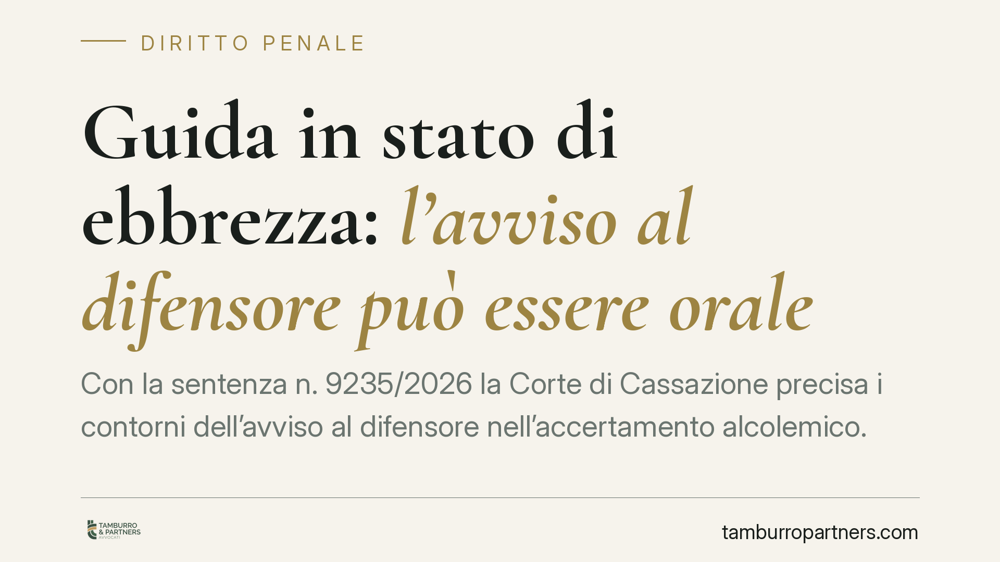

Guida in stato di ebbrezza: l'avviso al difensore può essere orale
Con la sentenza n. 9235/2026 la Corte di Cassazione precisa i contorni dell'avviso al difensore nell'accertamento alcolemico. L'informazione può essere data oralmente, a condizione che resti traccia nel verbale. Un chiarimento rilevante per chi viene fermato a un controllo stradale: il difensore può assistere, ma non deve essere atteso prima dell'alcoltest.

Il caso
Un conducente fermato per un controllo viene sottoposto all'accertamento dello stato di ebbrezza con etilometro. La difesa contesta l'avviso della facoltà di farsi assistere da un avvocato, ritenendolo viziato perché non reso in forma scritta. La Corte di Cassazione, con la sentenza n. 9235/2026, respinge l'impostazione e fissa due punti fermi.
Primo: l'avviso può essere orale, purché la sua effettiva comunicazione risulti documentata nel verbale. Secondo: il difensore ha diritto di assistere all'operazione, ma non quello di essere "atteso". Gli operanti non sono tenuti a sospendere l'accertamento in attesa del suo arrivo.
Inquadramento normativo
L'accertamento dello stato di ebbrezza rientra tra gli atti di polizia giudiziaria compiuti d'urgenza. Si applica l'art. 354 c.p.p. (accertamenti urgenti sui luoghi, sulle cose e sulle persone), richiamato in materia di circolazione dall'art. 186 del Codice della strada.
Il diritto all'assistenza difensiva trova fondamento nell'art. 356 c.p.p., che riconosce al difensore la facoltà di assistere agli accertamenti urgenti, e nell'art. 114 disp. att. c.p.p., che impone agli organi di polizia di avvisare la persona sottoposta a indagini della facoltà di farsi assistere da un difensore di fiducia.
La norma non prescrive una forma particolare per l'avviso. Da qui la conclusione della Corte: ciò che conta è che l'avviso sia effettivamente dato e che ne resti prova. Il verbale assolve proprio a questa funzione documentale. La mancata documentazione, al contrario, può integrare una nullità dell'accertamento.
Perché la distinzione conta
L'alcol nel sangue tende a diminuire nel tempo. Imporre agli operanti di attendere il difensore significherebbe, in molti casi, compromettere l'attendibilità stessa della misurazione. La Corte bilancia così due esigenze: la garanzia difensiva e l'effettività dell'accertamento.
Il risultato è un diritto di assistenza che resta pieno sul piano della partecipazione (il difensore, se presente, assiste), ma non si traduce in un potere di rinvio dell'operazione.
Implicazioni pratiche per il conducente
Chi viene fermato deve sapere che l'avviso potrebbe essergli rivolto a voce, in modo rapido, nel contesto concitato del controllo. È importante percepirlo e, se possibile, annotarne gli estremi.
La facoltà di nominare un difensore di fiducia esiste e va esercitata subito: una telefonata all'avvocato è legittima. Tuttavia, non esiste un diritto a bloccare l'alcoltest in attesa del suo arrivo. Rifiutarsi di sottoporsi alla prova in attesa del legale può, di per sé, configurare il reato di rifiuto previsto dall'art. 186, comma 7, Codice della strada, con conseguenze sanzionatorie autonome.
Sul piano difensivo, il controllo verte quindi non sulla forma dell'avviso, ma sulla sua tracciabilità e sulla correttezza dell'intera procedura: taratura dell'etilometro, intervallo tra le due misurazioni, condizioni del soggetto. Sono questi gli aspetti su cui si gioca realmente la tenuta dell'accertamento.
Cosa fare in concreto
- Ascolti con attenzione gli avvisi resi dagli operanti e chieda conferma, se non ha compreso, della facoltà di nominare un difensore.
- Contatti subito un avvocato di fiducia, ma non rifiuti l'accertamento in sua assenza: il rifiuto è autonomamente sanzionato.
- Verifichi il verbale e ne richieda copia: controlli che l'avviso al difensore risulti annotato.
- Conservi ogni elemento utile sulle modalità della prova (orario, numero di misurazioni, strumento utilizzato).
- Affidi a un legale la valutazione tecnica su taratura e procedura, dove si concentrano i margini difensivi più solidi.
In sintesi
La sentenza n. 9235/2026 conferma un equilibrio: la garanzia difensiva resta intatta nei contenuti, ma non può tradursi in uno strumento dilatorio. Per il conducente, la linea è chiara: collaborare all'accertamento e far valere le proprie ragioni nella sede corretta, con l'assistenza tecnica di un difensore.
---
*Contributo informativo a cura di Tamburro & Partners - Avv. Giuseppe Tamburro. Non costituisce parere legale.*
Ogni condominio ha una storia a sé.
Se gestisci un'amministrazione e vuoi un confronto su una specifica questione condominiale, scrivi allo studio. Ti rispondiamo entro un giorno lavorativo.